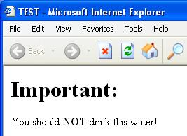
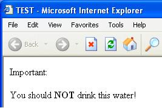
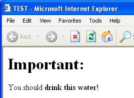

| Previous page | Next page | Contents | Home | Obix pragmatics |
Every possible error should be detected and treated as early as possible!
The rationale behind this pragmatic can be best understood by an example. Suppose we have the following HTML code:
|
Displaying this HTML code on my computer (equipped with Windows XP and Internet Explorer version 6.0) produces the following result:

Let's insert now different syntax errors in the HTML code and look at their consequences.
First, we replace </html> in the last line with <html>:
|
Here is the result:
Although we introduced a little syntax error, the interpreter did its job and the result is still the same. Everything is fine, isn't it?
Let's try another error. We delete another character and write </title
instead of </title> in the second line of code:
|
This code produces the following output:

As we can see, there is only a little optical problem: the word 'Important' is no longer displayed in big letters. But the role of our program is still fulfilled: to tell the reader that he or she should not drink the water. We could say: Better doing a job imperfectly than not doing it at all.
Finally, let's try another error of the same kind. We replace <b>
with <b in the fourth line:
|
This is the output:

Oops!!! This time a very serious problem arises! The program does exactly the opposite of what it should do. And the consequence is terrible: It has been transformed into a potential human killer.
What is the reason for the above problem? Although the interpreter (Internet Explorer in this case) could detect the above syntax error and display an error message, it tries to continue the job. But, although the 3 errors were of the same kind, their outcomes were extremely different. The obvious lesson from this example is very clear: The consequences of continuing arbitrarily in the case of an error vary, from really harmless (first case above) to extremely harmful (last case above). Even the smartest modern interpreter/compiler could never evaluate the potential consequences of a programming error and then decide to accept the error and choose a strategy to continue the job. The best thing it can do is to report an error, stop immediately and produce no output.
Remarks:
The logical conclusion to draw from the above example is:
Every possible error should be detected and treated as early as possible.
This is undoubtedly one of the most important rules in software development. It just has to be applied consistently if we want to create reliable software.
By the way, you may have heard about the 10 commandments for C programmers, written in old English. Commandment 6 tells us the same, in a more literary manner:
"If a function be advertised to return an error code in the event of difficulties, thou shalt check for that code, yea, even though the checks triple the size of thy code and produce aches in thy typing fingers, for if thou thinkest "it cannot happen to me'', the gods shall surely punish thee for thy arrogance."
Because of the importance of this pragmatic, any programming language should have built-in as much as possible easy to use error detecting mechanisms. In the case of a potentially dangerous error that is not explicitly caught and treated by the program, the system should never try to continue, but report a helpful error message and then stop immediately or, if appropriate, ask the user what to do.
Greatest efforts have been made to apply this important principle in Obix. The following is a brief enumeration of built-in features that should support the programmer in creating more robust, reliable software.
NullPointerException.)
| Previous page | Next page | Contents | Home | October 2004 |